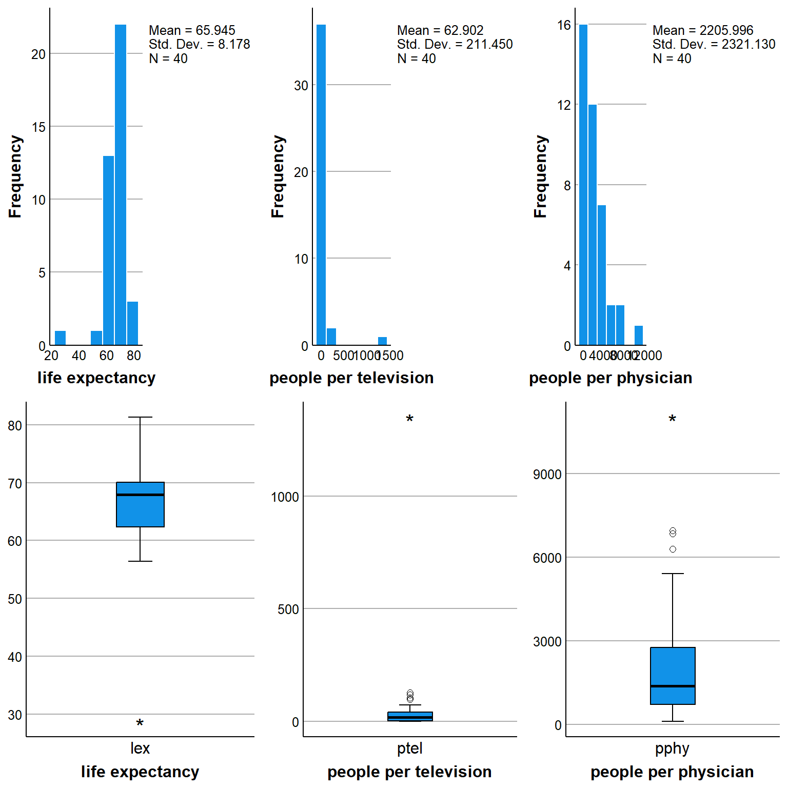

![]()
set.seed(768)
n <- 40
ln_pphy <- rnorm(n, 7.2, 1.3)
ln_ptel <- rnorm(n, 2.38, 1.56)
pphy <- exp(ln_pphy)
ptel <- exp(ln_ptel)
error <- rnorm(n, 0, 6)
lex <- 70 - 0.023*ptel - 0.001*pphy + error
country <- c("Argentina", "Bangladesh", "Brazil", "Canada", "China", "Colombia", "Egypt", "Ethiopia", "France", "Germany", "India", "Indonesia", "Iran", "Italy", "Japan", "Kenya", "Korea North", "Korea South", "Mexico", "Morocco", "Myanmar Bur", "Pakistan", "Peru", "Philippines", "Poland", "Romania", "Russia", "South Afric", "Spain", "Sudan", "Taiwan", "Tanzania", "Thailand", "Turkey", "Ukraine", "UK", "USA", "Venezuela", "Vietnam", "Zaire")
data_le_tv_sim <- data.frame(country, lex, ptel, pphy)R markdown for teaching
Quarto
R
Academia
teaching
 Hi guys, today I wanted to post something different from usual research tediousness that is only liked by statisticians and try to focus on another component my academic career, education or teaching, which has recently become quite prominent (with pros and cons of course).
Hi guys, today I wanted to post something different from usual research tediousness that is only liked by statisticians and try to focus on another component my academic career, education or teaching, which has recently become quite prominent (with pros and cons of course).
Specifically, I have been recently interested in incorporating some reproducible documentation within my own teaching material since I am not course coordinators in statistics for bachelor students here at UM. In the past, I saw that people tended to use these very nice but really time-consuming word documents that needed update every year for making questions and assignment tasks. Do not get me wrong the different examples and ideas behind these assessments are really nice but I have to admit that, given the inevitable need to use the same type of dataset every year, the chance that students received some tips about these tasks was quite nonignorable.
Thus, after receiving some inputs from one of my colleagues (thanks Sophie!), I have decided to try out full R markdown documentation to generate examples similar to the ones used in the past but that could be generated in a slightly different way every year taking advantage of the reproducibility of such documents with an incorporated R coding at the basis of the data generation procedure. I really think these approaches will represent the future for any type of teaching activity that involves some sort of data analysis and interpretation such as statistics: the possibility they offer to efficiently provide new examples without the need to look for new data or each time generate new datasets is so enticing for teachers and researchers who are involved in education. It makes our job so much easier in the long term which more than compensates the cost of learning how to implement these approaches.
As an example, I will focus here on the topic of simple linear regression which I give to students of the second year. For example, let’s say that the objective of the tutorial is to learn some basic concepts of linear regression modelling, e.g. interpretation of coefficients and correlation measures. You can start with an introductory part to describe the type of dataset students will need to work on.
Background
The dataset XXX comprises 40 countries (Country) in the world with populations of more than 20 million as of 1990 and records the life expectancy at birth (Lex), the number of people per television set (Ptel), and the number of people per physician (Pphy). The average life expectancies between males and females are provided as the country’s overall life expectancy.
This text will directly appear on the final document as you typed in the Rmd file. So for it works like a standard word file but it is now that the magic happens. We can create chunks of R code and embed them within the Rmd file and use different options to decide whether to show or not such code lines. For example, let’s say we want to generate the data of the above mentioned dataset. We can create a new chunk which incorporates the following R code that simulates the desired variables, their relationships, and combine them together into the new dataset.
Now all the generated variables, namely lex, ptel, pphy and country, are included into the data frame called data_le_tv_sim which has been created in the R workspace. If the focus on the tutorial is not on coding, it is desirable to hide the R code from the final document so that it is not displayed (but is still present and saved within R). R markdown allows you to do this in a really straightforward way by means of chunk options which can be customised for each created chunk. For example,
The option echo=FALSE allows to hide the
Rlines (while setting it to TRUE shows the lines)The option eval=TRUE tells the software to actually run the lines inside the chunk (setting it to FALSE prevents from doing so)
These are only two of many different options that can be customised in regard to the display of tables, figures, code lines color, size, font, etc…. For a full illustration of the high degree of customisation provided by R markdown I refer to the dedicated webpage.
After the introduction is done and perhaps the context and objective of the analysis presented, we can start asking questions. Let’s start with somehting simple, such as
Exercise
a. Examine and comment on the distributions of each variable separately (descriptives, histograms etc).
Well we can answer our own question (i.e. we give ourselves the solutions) by creating a new chunk in which we generate the desired output in R. Since we generated the dataset in the chunk before, it is still available within the R environment and we do not need to re-create it!
library(ggplot2)
hist_lex <- r2spss::histogram(data_le_tv_sim, variable = "lex") + xlab("life expectancy")
hist_ptel <- r2spss::histogram(data_le_tv_sim, variable = "ptel") + xlab("people per television")
hist_pphy <- r2spss::histogram(data_le_tv_sim, variable = "pphy") + xlab("people per physician")
box_lex <- r2spss::box_plot(data_le_tv_sim, variables = "lex") + xlab("life expectancy")
box_ptel <- r2spss::box_plot(data_le_tv_sim, variables = "ptel") + xlab("people per television")
box_pphy <- r2spss::box_plot(data_le_tv_sim, variables = "pphy") + xlab("people per physician")
gridExtra::grid.arrange(hist_lex, hist_ptel, hist_pphy,
box_lex, box_ptel, box_pphy, nrow = 2)
Here I used some ggplot2 coding to generate some boxplots and histograms of the data but of course the choice is entirely yours to decide which graphs or summaries should be provided by the students. For generating tables, we can also take advantage of the package knitr and its function kable which allows to display standard R tables in a much prettier format.
library(knitr)
library(dplyr)
d.summary.extended <- data_le_tv_sim %>%
dplyr::select(lex, ptel, pphy) %>%
psych::describe(quant=c(.25,.75)) %>%
as_tibble(rownames="rowname")
d.summary <- d.summary.extended %>%
dplyr::select(var=rowname, min, q25=Q0.25, median, q75=Q0.75, max, mean, sd)
kable(d.summary, caption = "Summary statistics", format = "html", digits = 1)| var | min | q25 | median | q75 | max | mean | sd |
|---|---|---|---|---|---|---|---|
| lex | 28.7 | 62.3 | 68.0 | 70.0 | 81.3 | 65.9 | 8.2 |
| ptel | 0.2 | 3.6 | 19.5 | 41.2 | 1349.5 | 62.9 | 211.4 |
| pphy | 106.1 | 710.2 | 1375.0 | 2767.5 | 11031.2 | 2206.0 | 2321.1 |
Also kable provides a lot of customisation options that allow to have many different types of formats and styles for your table, which can also be further extended using the package kableExtra. But let’s continue with our test.
b. Would you expect an association between a country’s life expectancy and its density of people per television set? If yes, would that be positive or negative (use the scatter plot function)?
To answer this question we could produce some scatter plots between the variables in R. An alternative would be to calculate the Pearson’s correlation coefficient as an indicative number. We could obtain such number by creating a corresponding chunk code but given that we only need a number it is actually more convenient to generate it within our line of text. How can we do that? simple, in the Rmd file you can include some inline R code by using the quotes signs. This means that instead of having:
#corr coeff
round(cor(lex, ptel, method = c("pearson")), digits = 2)[1] -0.76#corr coeff test
as.numeric(cor.test(lex, ptel, method = c("pearson"))["p.value"])[1] 1.70736e-08you can directly write a sentence an inlcude the output of the two above functions within the text. The results would be something like: the estimated Pearson’s correlation coefficient value between life expectancy and people per television is -0.76. The p-value given by the correlation test is 1.7073596^{-8}. What if now we want to include some theoretical stuff for the students?
d. Interpret your results. Would the sending of television shiploads to countries with short life expectancies improve the latter? Is there an explanation for your findings?
We can do it in an easy way since R markdown also supports latex math environments in combination with inline R code. For example, we can answer with something like the following. Since we are looking at the correlation coefficient \(\rho\) (Pearson’s), then the null and alternative hypotheses about the test for the linear association between life expectancy and people per television can be formulated as:
H0. \(\rho = 0\) (no linear association between variables)
H1. \(\rho \neq 0\) (linear association between variables)
We can use the correspnding p-value of this test equal to 1.7073596^{-8} to make a decision to whether reject or not the null hypothesis based on the evidence from the observed data. Finally, let’s do what we are here for, linear regression!
e. Perform a procedure that predicts life expectancy from people per television
In the following code I run the model and save some key output that I will need to display later on. A convenient feature of R markdown writing is that, after running a code chunk, everything that was successfully run is saved in the current R workspace and can be called back later on in the document very easily.
fitm1_r <- lm(lex ~ ptel, data = data_le_tv_sim)
fitm1rsq <- round(summary(fitm1_r)$r.square, digits = 2)
fitm1RSS <- round(anova(fitm1_r)["ptel", "Sum Sq"], digits = 2)
fitm1ESS <- round(anova(fitm1_r)["Residuals", "Sum Sq"], digits = 2)
fitm1TSS <- fitm1RSS + fitm1ESS
fitm1pval <- round(summary(fitm1_r)$coefficients[2, 4], digits = 4) We can then decide whether we want to show the summary results directly from the R output
summary(fitm1_r)
Call:
lm(formula = lex ~ ptel, data = data_le_tv_sim)
Residuals:
Min 1Q Median 3Q Max
-9.792 -3.218 1.341 3.231 13.850
Coefficients:
Estimate Std. Error t value Pr(>|t|)
(Intercept) 67.784092 0.895708 75.677 < 2e-16 ***
ptel -0.029235 0.004108 -7.117 1.71e-08 ***
---
Signif. codes: 0 '***' 0.001 '**' 0.01 '*' 0.05 '.' 0.1 ' ' 1
Residual standard error: 5.424 on 38 degrees of freedom
Multiple R-squared: 0.5714, Adjusted R-squared: 0.5601
F-statistic: 50.66 on 1 and 38 DF, p-value: 1.707e-08or perhaps hide the above output (setting the chunk option echo=FALSE) and provide a textual explanation while also embedding the R code generating the numeric results of interest (e.g. estimates or CI bounds) within the written text. If doing so, then we could have something like the following.
The model intercept and coefficient are 67.78 and -0.03, respectively. This means that 67.78 change in life expectancy is associated with a one unit increase in people per television. The p-value of this estimate is 0 with corresponding \(95\%\) confidence interval being (-0.04, -0.02).
The analysis of variance reveals that the residual sum of squares (ESS) is 1118.01, the regression sum of squares (RSS) is 1490.38, for a total sum of squares (TSS) of 2608.39. The corresponding \(R^2=\frac{\text{RSS}}{TSS}\) value of the model is given by 0.57, which suggests how about 57 % of the variation in life expectancy is explained by people per television.
Conclusions
R markdown provides a really nice opportunity to replace old and static documents with files that can be easily updated by simply changing a couple of lines of code. The results of this exercise can be replicated by using the same seed number but can also be varied by simply changing such number or by setting it to be randomly generated every time. Although not very popular yet, I truly believe R markdown will innovate the way teaching is done, at least within the scientific and quantitative data analysis field. For statistics, this is perfect since it allows an automated procedure to obtain new datasets that are consistent with the coding source created by the educator while also providing students with different numeric examples that makes it harder to cheat by simply “copying the answers from the previous years”.
I have started using R markdown for my own research a few years ago but its extreme flexibility and advantage over standard education tools for writing up documents has lead me to make it my best option also within my educational activities. Of course, I understand that the barrier to entry can be quite steep, especially for people who are not familiar with coding. However, I believe that getting familiar with these methods has become more and more relevant in the last years and will represent an essential skill for every teacher involved in data analysis topics.
Not convinced yet? are you not a fan of latex or html coding? no problem, R markdown allows also to produce these documents in word and even power point formats!
Hurray for R markdown!!!